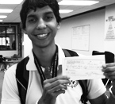
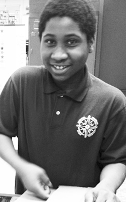

Programs for Teachers, Students, and Communities
DHF's EdTech Link Fellowships support Baltimore City Public Schools teachers in becoming digital age change-agents both in their schools and in their communities. DHF is the non-profit hub of a conversation surrounding the growth of Baltimore as a destination for teachers and entrepreneurs pushing the envelope of educational technology and we are fueling the local tech economy through collaboration, advocacy, research, publication, networking, and strategic partnerships.
EdTech Link is a DHF program dedicated to supporting students, teachers, and communities through the development of local non-profit tech centers providing training in digital literacy and tech workforce development as well as providing K-12 maker space.

GET PAID TO THINK
Get paid for learning web design.
LEARN HOW TO LEARN
Innovate and make new things.
LEARN HOW TO LOVE LEARNING
Become mentors to your community.
DHF supports students in a variety of ways including through Webslam -- where student teams design and build new websites for nonprofits and local businesses and top teams earn internships with local tech companies.
Students in DHF's EdTech Link program work as reverse mentors throughout Baltimore -- our students have even mentored Dr. Andres Alonso, CEO of Baltimore City Public Schools!
Our vision
We are a Baltimore-based nonprofit working to foster a culture of innovation, tech advancement, and entrepreneurship through local and global education initiatives. By providing support, services, and mentoring for K-12 students and recent college graduates in the field of technology, DHF strengthens the innovation economy of the Greater Baltimore Area while effecting change in the global conversation about education in the digital age.

Our goals
To end digital inequity among school children by giving them tech age skills and workforce capacity that will help them to see themselves as engaged citizens within a tech culture;
To empower teachers to be leaders in education relevant to the growth of digital age industry, economy, and civic culture; to help develop a culture of learning that will build sustainable links between K-12 education, college and workforce STE(A)M readiness, and the tech community;
To foster a community of innovation and entrepreneurship; to strengthen the urban technology economy; to be a model of collaboration and innovation between learners, teachers, and technologists.